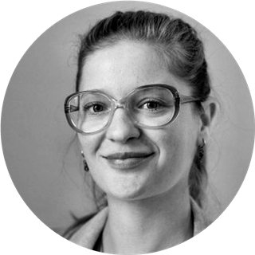
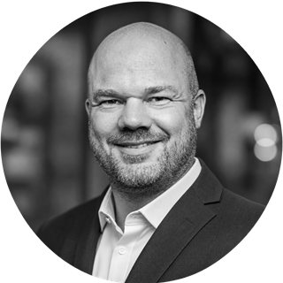
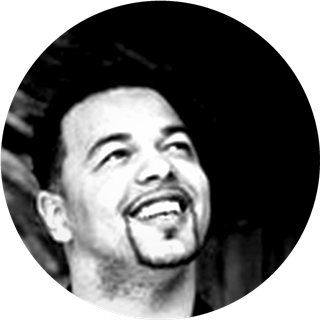
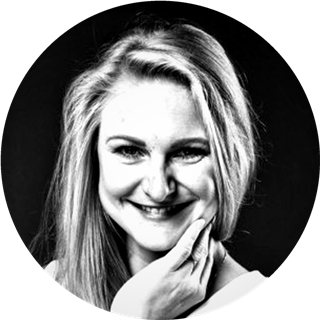

Menschen & Perspektiven



Chris
- Nazan
- Simone

Mein Netzwerk
Ein Netzwerk. Viele Perspektiven.
Gut, wenn nicht alle gleich denken.
Erfahrung und neue Ideen aus Wirtschaft, Beratung, Bildung und Kultur. KI ist Teil des Teams und Impulsgeber über alle Bereiche hinweg.
Business & Management
People & Transformation
Creativity & Innovation
Uns verbindet die Neugier auf andere Perspektiven, die Vielfalt unserer Erfahrungen und die Freude am kreativen Austausch. Wir denken unterschiedlich, diskutieren offen und haben Lust, gemeinsam neue Wege zu entdecken und auch ungewöhnliche Ideen weiterzuverfolgen.